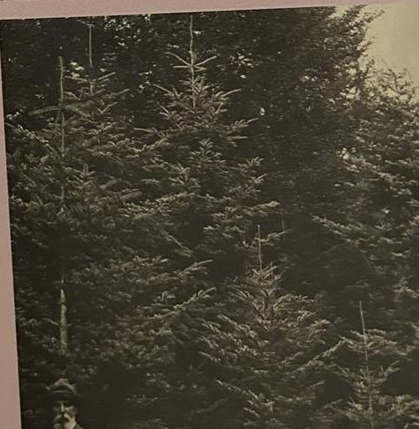

Groepen › Oude Wereld
38. Japan, Fujiberg

De vulkaanberg Fuji, gelegen te midden van het eiland Honshu, is een icoon van de Japanse cultuur. De Groep 38, daaraan gewijd, is aangelegd volgens de hoogtezones op de berg. De laagste zone, gekenmerkt door bladverliezende eiken-en beukenbossen met een uitbundige ondergroei, is hier eigenlijk niet vertegenwoordigd. Er staat een soort dwergbamboe, Sassa palmata, die wel in de onderetage van die bossen kan voorkomen. Het coniferenbos hogerop is wel representatief : het bestaat uit Sikkelcipres, een echte bosbouwsoort in Japan, naast Momi-, Nikko- en Veitchizilverspar, Alcock- en Jesospar, Hinoki- en Sawaraschijncipres, Noord- en Zuid-Japanse Hemlock en Japanse levensboom. In de hogere etage domineert Japanse lork, een echte bosbouwsoort, ook bij ons als ingevoerde exoot.
Uit het boek
1,49 ha · 23 soorten · 667 bomen
- De hoogtegordels van de Fujiberg.

Bron: Geografisch Arboretum Tervuren. Een wereldreis rond bomen (2020), p. 272 en volgende.
Deelgroepen
- 38 – De Fujiberg op Honshu, Japan
Soorten in deze groep (22)
- Abies homolepisNikkozilverspar · 125 bomen
- Abies veitchiiVeitchzilverspar · 122 bomen
- Chamaecyparis pisiferaSawaraschijncipres · 94 bomen
- Tsuga sieboldiiZuid-Japanse hemlockspar · 76 bomen
- Cryptomeria japonicaSikkelcipres · 62 bomen
- Betula platyphylla var. japonicaJapanse witte berk · 33 bomen
- Picea toranoTijgerstaartspar · 32 bomen
- Acer palmatumPalmbladesdoorn · 19 bomen
- Chamaecyparis obtusaHinokischijncipres · 15 bomen
- Larix kaempferiJapanse lork · 14 bomen
- Tsuga diversifoliaNoord-Japanse hemlockspar · 13 bomen
- Malus sargentiiSargentsierappel · 5 bomen
- Picea alcoquianaAlcockspar · 4 bomen
- Thuja standishiiJapanse levensboom · 4 bomen
- Alnus japonicaJapanse els · 2 bomen
- Juglans speciesWalnoot · 2 bomen
- Picea jezoensisOost-Aziatische spar · 2 bomen
- Pseudosasa japonica2 bomen
- Pterostyrax hispida2 bomen
- Abies firmaMomizilverspar · 1 boom
- Prunus sargentiiSargentkers · 1 boom
- Sasa palmataDwergbamboe · 1 boom
Tekst en foto: arboretum-tervuren.be (Koninklijke Schenking), met toestemming gebruikt.